The main impact of oil at $200 a barrel on South Korea would be a large drop in GDP of 4.33% by Q13. Equities peak at -10.46% in Q12.
Demand and trade. Consumption peaks at -2.72 % vs baseline in Q13, from -1.01 in Q1 to -2.08 in Q20. Investment peaks at -11.36 % vs baseline in Q8, from -5.97 in Q1 to -5.47 in Q20. Net Exports peaks at -5.69 % vs baseline in Q4, from -3.46 in Q1 to -1.64 in Q20. Gov Spending peaks at +0.77 % vs baseline in Q13, from +0.34 in Q1 to +0.56 in Q20. Gov Debt peaks at -3.15 % vs baseline in Q20, from -0.13 in Q1 to -3.15 in Q20.
External / FX. The real exchange rate shows real depreciation (a weaker, more competitive home currency). Currency Strength peaks at +9.41 % vs baseline in Q4, from +5.76 in Q1 to +7.22 in Q20.
Labour. Employment peaks at -4.23 % vs baseline in Q16, from -0.37 in Q1 to -4.03 in Q20. Unemployment peaks at +1.70 pp in Q15, from +0.20 in Q1 to +1.51 in Q20. Real Wages peaks at -4.83 % vs baseline in Q20, from -0.02 in Q1 to -4.83 in Q20.
Prices. The three-year CPI impulse is +2.93 percentage points. CPI Inflation peaks at +0.56 pp in Q2, from +0.45 in Q1 to -0.19 in Q20. Domestic Infl. peaks at +0.39 pp in Q2, from +0.31 in Q1 to -0.14 in Q20. Marginal Cost peaks at -2.56 % vs baseline in Q13, from -1.14 in Q1 to -1.85 in Q20.
Financial conditions. Policy Rate peaks at -2.00 pp (annualized) in Q20, from +0.44 in Q1 to -2.00 in Q20. Govt 2Y Yield peaks at -1.98 pp (annualized) in Q19, from +0.94 in Q1 to -1.96 in Q20. Govt 5Y Yield peaks at -1.79 pp (annualized) in Q15, from -0.33 in Q1 to -1.67 in Q20. Govt 10Y Yield peaks at -1.41 pp (annualized) in Q12, from -0.98 in Q1 to -1.23 in Q20. Bond Price peaks at +10.01 % vs baseline in Q20, from -2.19 in Q1 to +10.01 in Q20. Equity Index peaks at -10.46 % vs baseline in Q12, from -4.99 in Q1 to -6.70 in Q20. Tobin's Q peaks at -7.95 % vs baseline in Q8, from -4.18 in Q1 to -3.83 in Q20. House Prices peaks at -5.35 % vs baseline in Q20, from -0.23 in Q1 to -5.35 in Q20. Bank Credit peaks at -1.06 % vs baseline in Q17, from -0.09 in Q1 to -1.04 in Q20. Credit Spread peaks at +0.01 pp in Q17, from +0.00 in Q1 to +0.01 in Q20.
Sectoral and capital. Manuf. GDP peaks at -7.12 % vs baseline in Q4, from -4.31 in Q1 to -4.60 in Q20. Services GDP peaks at -2.62 % vs baseline in Q13, from -1.18 in Q1 to -1.89 in Q20. Capital Stock peaks at -0.95 % vs baseline in Q20, from -0.03 in Q1 to -0.95 in Q20.
Timing. By Q20 GDP is still -3.13% from baseline.
These figures are model IRFs versus baseline, not forecasts.
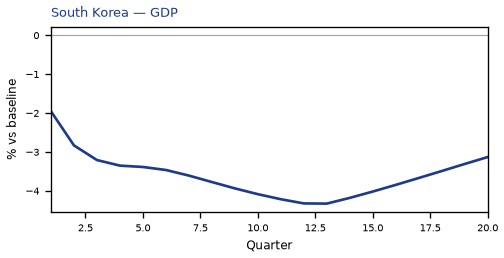
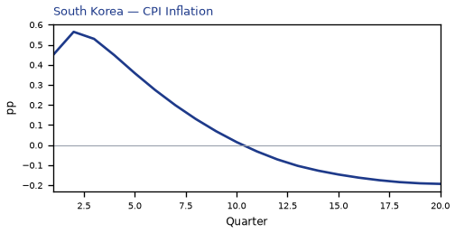
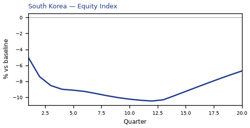
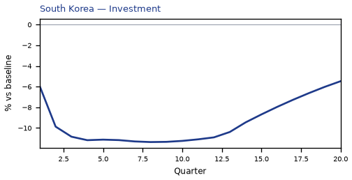
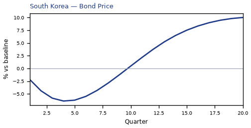
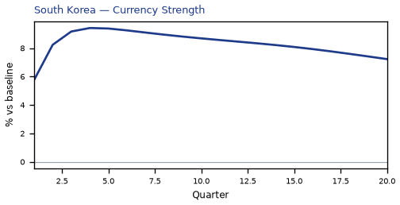
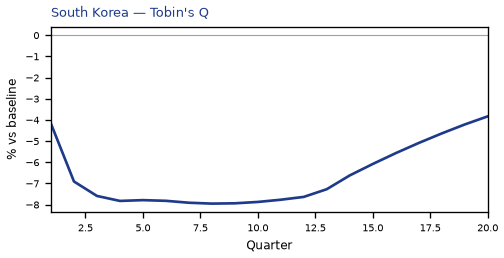
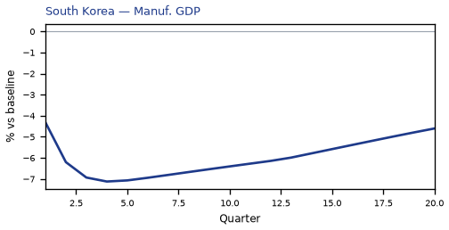
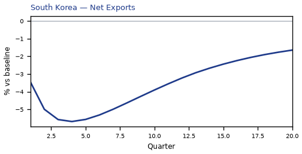
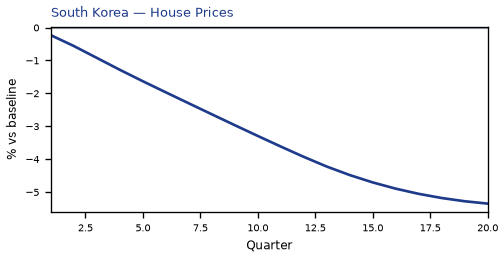
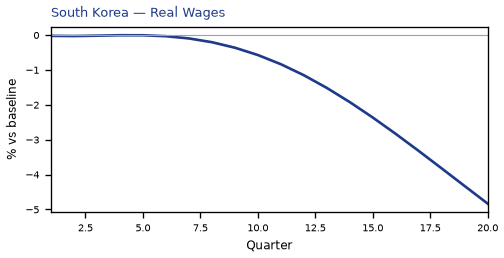
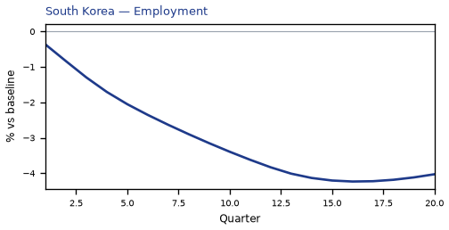
source=live · global_macro_v5 · contract v6 · Q1–Q20 JSON · not financial advice